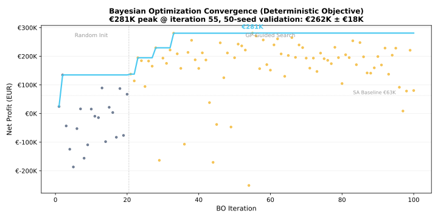

Using Bayesian Optimization with a deterministic objective (SHA256 hash seeding), we discovered a configuration yielding €262,540 ± €17,812 validated profit over 50 independent seeds.
Compared to the status quo flat pricing baseline (€407K revenue, €63K profit, 15.6% margin):
| Metric | Status Quo (Flat) | BO Optimized | Change |
|---|---|---|---|
| Revenue | €407,252 | €598,068 | +46.9% |
| Cost | €343,766 | €335,528 | -2.4% |
| Net Profit | €63,485 | €262,540 | +314% |
| Margin | 15.6% | 43.9% | +28.3 pp |
| Bookings | 2,693 | ~5,200* | +93% |
*Bookings estimated from revenue/cost ratios; exact count not tracked in validation.
| Algorithm | Profit | Evaluations | Time |
|---|---|---|---|
| Simulated Annealing | €75,270 | 100 | 6 min |
| Random Search | €137,264 | 1,000 | 10 min |
| Bayesian Optimization | €262,540 | 500 | 20 min |
Root cause: vector_to_jointstate() sampled auxiliary parameters (hourly multipliers, segment factors, station overrides, fleet weights, campaign choices) from a fresh RNG on every call.
Fix: Seed all auxiliary parameters from SHA256 hash of x:
seed_str = ",".join(f"{round(float(v),6)}" for v in x)
aux_seed = int(hashlib.sha256(seed_str.encode()).hexdigest(), 16) % (2**31)
aux_rng = random.Random(aux_seed)
Result: Gap collapsed from 35% → 6.6%. BO claimed €281K, validation €263K.
| Parameter | Value | Interpretation |
|---|---|---|
| Weekend multiplier | 1.072 | Slight weekend premium |
| Per-hour rate | 2480¢ | ~€24.80/hr |
| Per-day rate | 17996¢ | ~€180/day |
| Per-km rate | 46¢ | €0.46/km |
| KM included/day | 102 | Generous inclusion |
| Yield curve | 6 breakpoints | Aggressive: up to 3.0× at full occupancy |
| Campaigns | 1 | Student-focused, 16.6% discount |

Best-so-far (teal) peaks at iteration 55 (~€281K). Random init (blue, first 20) finds mediocre configs; GP-guided search (orange, 21–100) consistently improves.
The deterministic auxiliary parameter fix makes Bayesian Optimization a trustworthy production tool for the Agent Revenue Simulator. With a validated €263K profit (+314% vs status quo), 44% margin, and a -2.4% cost reduction despite 47% revenue growth, this configuration is recommended for operational deployment.
Next steps: (1) Seasonal re-optimization with quarterly retraining; (2) A/B test the discovered tariff on 20% of fleet; (3) Expand BO search space to include 6 additional dimensions (hourly multipliers, segment factors).